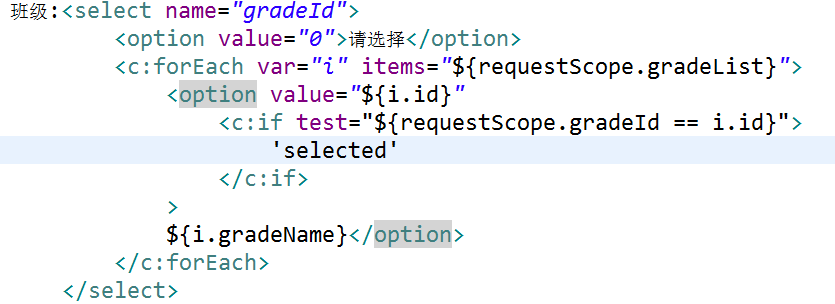
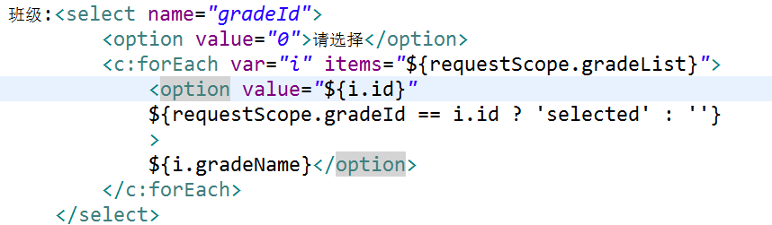
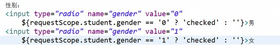
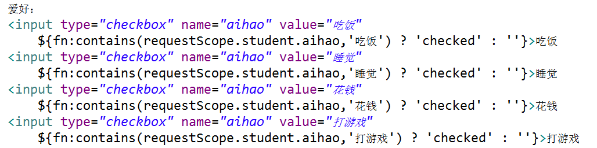
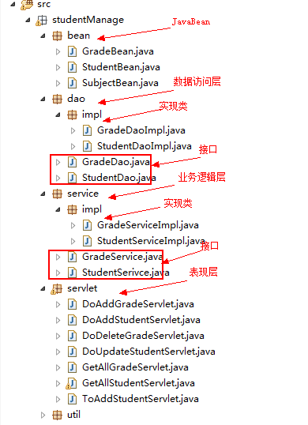

web应用服务器
目前较为主流的Web应用服务器 Tomcat —— Apache软件基金会 Jboss ——- JBOSS公司 Weblogic —— BEA公司 Websphere —– IBM公司 IIS —— 微软 支持ASP语言 Web应用服务器的主要作用是让用户可以通过浏览器（HTTP/HTTPS）方式访问你的项目。
Tomcat目录结构
bin目录：存放tomcat启动和关闭的脚本文件 conf目录：存放tomcat各种配置文件 lib目录：存放tomcat的jar文件 logs目录：存放tomcat日志文件 work目录：tomcat运行时产生的工作文件 temp目录：存放临时文件 webapps目录：主要的发布目录，放置javaWeb程序 发布： Eclipse:右键项目，export，选定路径生成war包，放入Tomcat的webapps目录下 idea：maven-package
tomcat启动与停止
启动服务：双击tomcat bin目录下的startup.bat 最后一行显示：server startup in 1234 ms 证明启动成功 打开浏览器，输入localhost:8080，可以看到tomcat默认页面 停止服务：双击tomcat bin目录下的shutdown.bat 或直接闭窗口
Tomcat端口设置
conf目录下server.xml文件进行修改
在server.xml中找到<Connector></Connector>标签，修改port中的端口号
注：端口范围：0–65535，其中0–1023，这些端口，一般固定分配给一些服务，
21 – FTP服务(文件传输)
25 – SMTP(简单邮件传输协议)
80 – HTTP服务
135 – RPC(远程过程调用)
动态端口范围：1024 – 65535 ,尽量不要占用系统端口
Tomcat启动失败常见问题
1.JAVA环境变量配置有问题为导致tomcat启动时一闪而过，启动不成功。 2.tomcat端口被其他程序占用，尝试关闭占用端口的程序或修改tomcat端口
访问Tomcat中的项目
IP地址:端口号/项目名字
多个tomcat共存
修改conf/server.xml文件其中的三处地方:
|
|
Web项目结构
在WEB-INF 之外，存放静态资源，可以通过浏览器访问 WEB-INF中的文件受保护，无法通过浏览器直接访问
apache和tomcat区别
- apache支持静态页，tomcat支持动态的，比如servlet等， 一般使用apache+tomcat的话，apache只是作为一个转发，对jsp的处理是由tomcat来处理的。 apache可以支持php\cgi\perl,但是要使用java的话，你需要tomcat在apache后台支撑，将java请求由apache转发给tomcat处理。 apache是web服务器,Tomcat是应用（java）服务器，它只是一个servlet(jsp也翻译成servlet)容器，可以认为是apache的扩展，但是可以独立于apache运行。
这两个有以下几点可以比较的： 1、两者都是apache组织开发的 2、两者都有HTTP服务的功能 3、两者都是免费的
不同点：
- Apache是专门用了提供HTTP服务的，以及相关配置的（例如虚拟主机、URL转发等等），Tomcat是Apache组织在符合J2EE的JSP、Servlet标准下开发的一个JSP服务器
- apache是一个web服务器环境程序,启用他可以作为web服务器使用,不过只支持静态网页,如(asp,php,cgi,jsp)等动态网页的就不行，如果要在apache环境下运行jsp的话就需要一个解释器来执行jsp网页， 而这个jsp解释器就是tomcat, 为什么还要JDK呢？因为jsp需要连接数据库的话，就要jdk来提供连接数据库的驱程，所以要运行jsp的web服务器平台就需要apache+tomcat+jdk。 整合的好处是： 如果客户端请求的是静态页面，则只需要Apache服务器响应请求 如果客户端请求动态页面，则是Tomcat服务器响应请求，因为jsp是服务器端解释代码的，这样整合就可以减少Tomcat的服务开销。
- apache:侧重于http server
tomcat:侧重于servlet引擎，如果以standalone方式运行，功能上与apache等效，支持JSP，但对静态网页不太理想；
apache是web服务器，tomcat是应用（java）服务器，它只是一个servlet(jsp也翻译成servlet)容器，可以认为是apache的扩展，但是可以独立于apache运行。
换句话说，apache是一辆卡车，上面可以装一些东西如html等。但是不能装水，要装水必须要有容器（桶tomcat），而这个桶也可以不放在卡车上。
Tomcat 警告：consider increasing the maximum size of the cache
这是因为tomcat8以上对resource采取了cache，而默认的大小是10M。解决的办法很简单，就是在context.xml中调大缓存。
在context.xml中加入如下配置：
<Resources cachingAllowed="true" cacheMaxSize="100000" />
JSP
JSP语法
JSP中可以写JAVA代码
|
|
<% JAVA代码 %>
单个脚本片段可以是不完整的，但是多个脚本片段整合的结果必须是完整的JAVA语句
JSP脚本表达式
<h1><%=userName%></h1>
<%= 变量名 %>
JSP对象作用域
作用域：即"信息共享的范围"，就是说一个信息能够在多大范围内有效。 从大到小排列 1.Application 在所有应用程序中有效 例：如将一个变量保存到application中，所有人通过浏览器都可以看到该变量的值（信息是共享的）。
2.Session 在当前会话有效 会话：打开浏览器访问某网站，等于跟目标网站开启了一个会话，将浏览器关闭，则此次会话结束。 例：现有一个用户如将一个变量保存到session中，当前用户打开浏览器可以看到该变量的值，其他用户看不到，关闭浏览器后则会话结束。
3.Request 在当前请求有效 请求：每一次操作网站，比如：查询，提交，购买 …… 请求查询，请求提交，请求购买……
4.Page 当前页面有效
JSP内置对象
Web服务器(Tomcat)启动后创建的一组对象，不需要使用new关键字直接可以使用该对象。 内置对象只存在于JSP中 JSP九大内置对象 session,request,response,out,page,application,pageContext,exception,config
1.Session对象
|
|
2.Request对象
|
|
3.Response对象
|
|
4.Out对象
|
|
5.Page对象 类型:java.lang.Object 作用域：Page
6.Application对象
|
|
- pageContext对象
|
|
8.exception对象 类型：java.lang.Exception 作用域：Page 本JSP页面的异常对象
9.config对象 类型: javax.servlet.ServletConfig 作用域：Page 代表配置对象。
10.总结
|
|
JSP基本指令
1.指令用于对JSP一些设置
指令语法 <%@ 指令名 属性名 = 值 %>
一个指令作用于整个JSP文件
1.1 page指令
<%@ page import="jsp_test.deleteUser"%>
1.2 include指令
附加一个页面
<%@ include file="doLogin.jsp" %>
1.3 tablib指令
<%@ prefix="c" uri="http://java.sun.com/jsp/jstl/core" %>
JSP动作
略 违反了前后端分离的思想
jsp:include与<%@include%>区别
1.<%@include%>嵌入代码，先合并后编译，把代码原封不动的附加过来 如页面a.jsp中 有变量 stuName，b.jsp 中同样存在变量 stuName 使用<%@include%> 将报错，变量名重复
2.jsp:include嵌入执行后的内容。 先编译后合并，合并的是编译后的结果。 上述情况如使用jsp:include则不会报错。
Servlet生命周期
1.装载并创建该Servlet的一个实例对象(实例化) 2.调用Servlet实例对象的init()方法(初始化) 3.创建了一个用于封装HTTP请求消息的HttpServletRequest对象和一个代表HTTP响应消息的 HttpServletResponse对象，然后调用servlet的service()方法， 并将请求和相应对象作为参数传递进去(服务) 4.Web应用程序在被停止或重新启动之前，Servlet引擎将卸载Servlet，并在卸载之前调用Servlet的 destroy()方法) (销毁)
实例化 — 初始化 — 服务 — 销毁
转发和重定向的区别
重定向(redirect) 1.发送请求 2.服务器响应请求，返回给浏览器一个新的地址和响应 3.浏览器根据响应码，判定该响应为重定向，自动发送一个新的请求给服务器，请求地址为之前返回的地址 4.服务器响应请求给浏览器
转发(forward): 1.发送请求 2.服务器进行请求的重新设置，例如通过request.setAttribute 3.浏览器根据转发的地址，获取该地址的网页 4.服务器响应请求给浏览器
区别： 1.redirect改变浏览器地址，forward浏览器网址不变 2.redirect产生了两次请求，forward只产生一次请求 3.redirect网址可以是任意网站，forward必须是本站的网址 4.redirect:之前request中的变量全部失效，并进入一个新的request作用域 forward:之前request中的变量不会失效，就像把两个页面拼到了一起
1.有值没值 2.本站外站 3.变不变址 4.一次两次
JavaBean
特征： 1.提供了一个默认的无参构造函数 2.需要被序列化并且实现了Serializanle接口 3.可能有一系列可读写属性 4.可能有一系列的"getter"或"setter"方法。
简单来说，JavaBean也是一个普通的JAVA类。 项目中，每一张数据表对应一个JavaBean, JavaBean中的属性、属性类型与数据表的字段和数据类型对应。 可将一个JavaBean对象看成一条数据。 单条数据用一个JavaBean对象接收。 多条数据用List< JavaBean > 对象接收。 通过JavaBean可实现数据表之间的关系。 使用JavaBean可保证开发时的效率以及数据类型的检查。
JSTL标签及EL表达式
JSTL标签：
JSP标准标签库（JSTL）是一个JSP标签集合，它封装了JSP应用的通用核心功能。JSP标准标签库（JSTL）是一个JSP标签集合，它封装了JSP应用的通用核心功能。 使用方法： 1.导入JAR包，jstl-1.2.jar。 2.在JSP页面中导入标签库 <% tablib prefix=“c” uri=“http://java.sun.com/jsp/jstl/core" %>
EL表达式
语法结构:
${expression}
可获取Page,Request,Session,Application作用域中的对象，根据setAttribute的key来获取。
获取request中的student对象：${requestScope.student}
获取request中的student对象的name属性：${requestScope.student.name}
常用的JSTL标签： JSTL可嵌套EL表达式：
<c:if>
|
|
注意：只有if标签，没有else标签
<c:choose>
<c:choose>本身只当做<c:when>和<c:otherwise>的父标签，不能单独使用。配套使用替代if/else结构
|
|
<c:forEach>
用于遍历集合中的数据 <c:forEach var=“i” items="${requestScope.list}">
${i.name}
</c:forEach> 假设后台代码 request.setAttribute(“list”,list); 那么每一次循环标识“i”都代表了一个student对象。 通过“i” 可以获取到student中的所有属性。jstl实战
判断选中了哪一个下拉选的值
方法1：  方法2： 
单选框

复选框
需要引入另外一个标签库：
<%@ taglib prefix="fn" uri="http://java.sun.com/jsp/jstl/functions" %>
调用方法fn.contains判断是否包含

MVC模式
MVC全名是Model View Controller 模型(model)－视图(view)－控制器(controller) MVC是一个框架模式，它强制性的使应用程序的输入、处理和输出分开。使用MVC应用程序被分成三个核心部件：模型、视图、控制器。它们各自处理自己的任务。最典型的MVC就是JSP + servlet + javabean的模式。 MVC工作原理 用户发送一个请求到控制器，控制器处理业务逻辑，如需要与数据库交互会用到相应的模型，业务逻辑处理完毕后返回一个结果（视图）给用户。
项目开发三层模式
数据访问层（最下层） 主要负责数据库的访问，与数据进行交互，增删改查代码。 业务逻辑层（中间层） 处理个性化业务逻辑代码。 表现层（最上层） 离用户最近。用于显示数据和接收用户输入的数据，为用户提供一种交互式操作的界面。 优点： 1.开发人员可以只关注结构中的某一层。 2.可以很容易的用新的实现来替换原有层次的实现。 3.可以降低层与层之间的依赖。 4. 有利于标准化。 5. 利于各层逻辑的复用。 缺点：
- 降低了系统的性能。这是不言而喻的。如果不采用分层式结构，很多业务可以直接造访数据库，以此获取相应的数据，如今却必须通过中间层来完成。
- 有时会导致级联的修改。这种修改尤其体现在自上而下的方向。如果在表示层中需要增加一个功能，为保证其设计符合分层式结构，可能需要在相应的业务逻辑层和数据访问层中都增加相应的代码。 
注意：代码不可跨层调用。 与MVC模式不用，MVC属于程序语言的设计模式。三层模式为实际开发模式。
分页
分页所需条件 1.每页显示数（自定义） 2.当前页面，初识为1，第一页（通过页面JSP传递得到） 3.总页数（计算得到） 总页数 = 总条数/每页显示数 如果总条数/每页显示数为整数 那么页数刚好 如果不为整数 需要页数+1 如果总条数/每页显示 +1 4.总条数（查询数据库得到） 5.获取数据起始位置，用作LIMIT 关键字的第一个参数（计算得到） 公式 ： （ 当前页数 - 1 ） * 每页显示数